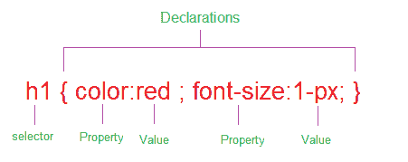

Création en 1996. Sa fonction est de mettre en forme du continu lui aplliquent ce qu'on appele des styles. CSS vas nous permettre par exemple
de definir la tai-taille, la couleur ou l'alignement du texte.Pour finir nous pouvons dire que on utilise CSS sur notre code HTML
afin d'enjoliver le resultat visual final.
En CSS, il existe deux grandes familles: des éléments de type block, et des éléments de style in-line"
Servent à la mise en page générale de la page en créant des grands rectangles "conteneurs"
Sont juste des conteneurs plus petites avec un comportément spécifique. Ces balises ont des marges externes et internes définies par défaut.
Le flux, c'est l'ordre d'affichage des élèments. Ainsi, le navigateur parcours votre page HTML, récupère les différents éléments, et les affiche dans un certain ordre.
Les éléments de type block vont s'afficher les uns en dessous des autres, alors aue des éléments de type in-line vont s'affiché les
uns à la suite des autres.
La propièté CSS position permet de modifier le comportement d'affichage des blocs.
Position:static: l'élément doit se comporter normalement. Il suivra donc le flux sans se poser plus de questions.
Position:fixed: placer un élément sur la page, et qu'il reste quel que soit sont défilement
Position:relative: ne retire pas l'éléments du flux, mais le déplace simplement par rapport à sa position dans le flux
Position:absolu: rétire complétement l'élément concerné du flux, et le placer aux coordonées définies par les propiétés bottom, left, right ou top
La propieté CSS display va nous permettre de modifier le type de nos éléments. Nous trouvons:
None: élément n'est pas affiché.
Block: l'élément est de type block comme un paragraphe.
Inline: l'élément est de type inline.
Inline-block: l'élément est de type inline mais nous redimensionnable comme un block.
List-item: l'élément devient liste à puces.
Le selecteur indique à quoi se rapportent un esemble des propiétés.
Il désigne les elements correspondant à une balise.
Un groupe est composé de plusieurs balises séparées par des virgules. Il désigne tous les éléments correspondant à l'une des balises énumérées.
Une série des balises séparées par le signe < désigne les éléments qui sont enfant directs d'un autre élément.
Une série des balises séparées par un + désigne les éléments qui suivent directement un autre éléments en ayant les même parent. Les deux éléments
successifs peuvent être sur la même balise comme dans autre.
L'attribut ID peut être utilisé comme sélecteur. En principe l'ID est unique sur chaque page, ce aui signifie aue les règles ayant un ID comme sélecteur
ne s'appliqueront que sur un seul élément de chaque page.
Le selecteur étoile (*) désigne tous les éléments. Le selecteur est géneralement utilisé pour initiliaser une propiete commune à tous les éléments de la page
comme la police par exemple.
Les proprietés vont définir les éléments. Je vais citer seulement certains entre eux.
Elle définit la police de caractère utilisé. Lors du chargement de la page le navigateur cherche sur votre ordinateur la police déclarée
Elle définit la police de caractère utilisé. Lors du chargement de la page le navigateur cherche sur votre ordinateur la police déclarée
Elle définit la taille de la police de caractère. Elle prend comme paramètre un nombre et une unité que répresenteront une taille. Elle s'exprime en %,em ou px
Elle définit l'épaisseur de la police. 4 posibilités: bold, bolder, lighter et normal
Elle définit l'alignement du texte dans son conteneurs
Cette proprièté definit la couleur du texte. Pour indiquer celle-ci, trois méthodes aux choix: le nom complet, en anglais, mais n'est pas possible que pour les couleurs base
, le code hexadecimal du type #91c225 ou le code RGB rgb(145,194,37)

Cette propièté permet d'attribuer un couleur de fond à un élément texte, div, table. L'indicateur de couleur se fait de la même façon que pour les propiétés FONT.
Ces propiétés utilisés pour attribuer des valeurs de largeurs et hauter à un élément. S'il elle permmettent de déterminer une dimensions fixe, elle sont aussi utilisées
pour appliquer des limites de dimensions. Un bloc ayant des valeurs "auto" peut être complété par des indications de dimensions minimales et maximales. Ces dimensions
sont généralement exprimées en px, ou % et ces propietés se déclinent en 6 conditions: width, min-width, max-width,heigt, min-height et max-width.
Les formulaires vont nous permettre de recueillir des données envoyées par nos utilisateurs.
Il y a une série d'éléments qui vont nous permettre de creer des formulaires
Le élément form nous permet de définir un formulaire. Il y a besoin des 2 attributs: L'attribut method et action.
L'attribut method va indiuer comme doivent être envoyées les données saisies àr l'utilisateur. Cet attribut peut prendre deux valeurs: get et post
L'attribut action va lui nous servir à preciser l'adresse relative de la page dans laquelle les données doivent ètre traités.
L'élément input se présente sous la forme d'une balise orpheline est poséde un attribut type auquel on va pouvoir donner des nombreuses valeurs.Ex: text,mail..etc
L'élément Label permet de décrire à l'utilisateur ce qu'il doit rentrer dans chaque champ du formulaire.
Nous devons lier un label à un élément du formulaire grâce aux attributs for et id. Il faudra donner strictement la même valeur aux attributs
for et id afin de lier entre eux un label et un élément de formulaire
L'élément textarea va nous permetre de créer un champ de texte multi-lignes, pouvant accuellir par exemple un commentaire.
Exemple:
Nous devons preciser un attribut name, pour chaque élément de notre formulaire demandant des informations à l'utilisateur.
Cet attribut name va nous permettre par la suite de reconnaître le contexte de chaque donnée envoyée par l'utilisateur afin de pouvoir les traiter efficacement
.
< form action=""
method="post">
<label for="name"> Nom: </label>
< input type="text" name="user_name" id="name"/>
<label for="commentaire"> Commentaire: </label>
<textarea type="text" name="user_name" id="commentaire"> </textarea >
</form >
La valeur texte va tout simplement nous permettre de crrér un champ de saise mono-ligne dans lequel l'utlisateur entrera des données.
La valeur password va nous permettre de crér un champ de saisie sécurisé pour exemple pour demander un mot de passe à nos utilisateurs.
La valeur date va être utilisée pour créer des champs de formulaire devant recevoir une date, comme une date de naissance.
La valeur mail de l'attribut type va nous permettre de créer un champ de formulaire devant recevoir, une adresse email.
La valeur radio va nous permettre de créer des boutons de type radio, c'est à dire de demander à l'utilisateur de choisir une option et seulement
dans une liste proposée. Il doit avoir un attribut valeur
Exemple:
Le type checkbox ressemble à la valeur radio, mais l'utilisateur peut ne choisir auncun choix, un choix ou même plusieurs choix.
Un élément input type submit va nous permettre de créer un bouton d'envoi des données du formulaire. Pas besoin d'utiliser un attribut name sinon valeur
Nous avons besoin d'un select pour définir notre liste en soi, et des éléments option pour définir chaque élément de notre liste
Nous devrons préciser un attribut name pour notre élément select puis des attributs value pour chaque élément option.
Nous pouvons grouper érentes options entre elles au sein d'une liste grâce à l'élément optgroup. Pour chaque groupe d'options
nous préciserons un attribut
Les attributs HTNL min et max vont nous permettre de préciser les valeurs minimales ou maximales attendus pour chaque champ.
Cet attribut va nous permettre de rendre un champ de formulaire obligatoire, si l'utlisqteur n'a pas rempli le champ , le formulaire ne pourra pas être envoyé.
L'élément fieldset va nous permettre de regrouper certains éléments d'un formulaire HTML entre eux, afin de crér differents sections pour notre formulaire
et de le structurer. Pour donner un nom à chaque section, ous allons utiliser l'élément HTML legend à l'intérieur de fieldset
Les transitions vont nous permettre de modifier la valeur d'une propriété CSS de façon fluide, dans le temps, créant ainsi une transition entre les différentes
valeurs de notre propriété.
Les animations en CSS vont nous permettre de changer le style d’un élément HTML. Contrairement aux transitions, on va pouvoir grâce aux animations modifier le style d’un élément
HTML sans changement d’état de celui-ci et autant de fois que voulu.
Pour créer une animation en CSS, nous allons utiliser la propriété animation ainsi que la règle CSS @keyframes
Les pseudo classes vont nous permettre de changer le style d’un élément HTML selon son état, c’est-à-dire de façon quasi dynamique. Par exemple, nous allons pouvoir afficher un
paragraphe en gras lorsque l’utilisateur passe sa souris dessus ou changer la couleur d’un lien une fois celui-ci cliqué. Les pseudo classes sont reconnaissables au fait qu’elles
commencent tous par le symbole :
Les pseudo éléments CSS vont nous permettre de modifier l’apparence d’une partie seulement d’un ou de plusieurs éléments HTML, ou encore d’ajouter du contenu au début ou à la fin
d'un certain élément HTML. Les pseudo éléments sont reconnaissables en CSS à leur écriture tous commencent par ::